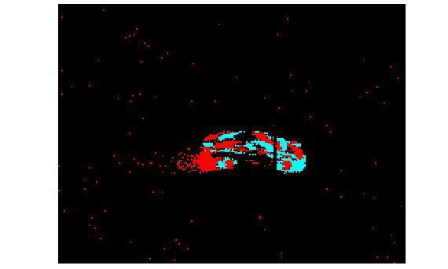
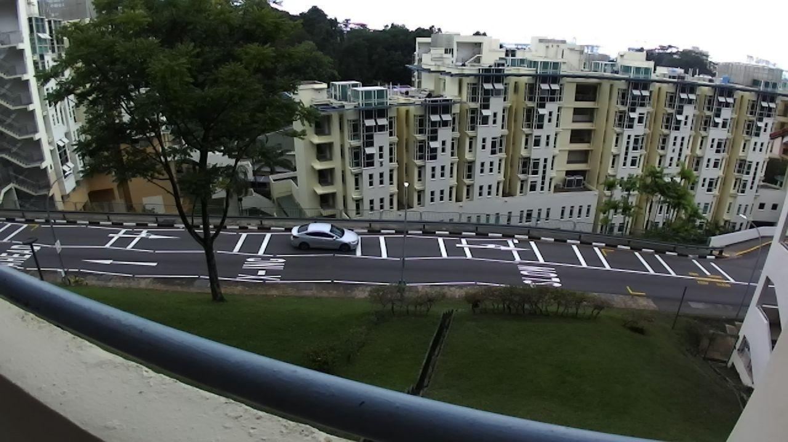

dataset
The dataset is divided by event and RGB data recorded by the Inivation DAVIS240C camera and the ZED Stereo camera, respectively.
The event data is composed of binary files. To read them, the MATLAB AER Vision Functions are needed https://github.com/gorchard/Matlab_AER_vision_functions.
- Add the AER vision functions to the MATLAB path.
- Load a file using the "read_linux" function.
e.g. td = read_linux('../EBBINNOT/DAVIS_Events/Recording/20180711_Site1_3pm_12mm_01.bin'); - Visualize the data using the ShowTD function.e.g. ShowTD(td);
Scripts to read the dataset and extract tracks from the annotation files are also included:
For event data: make_dataset_images_full.m
For RGB data: make_dataset_images_RGB_full.m
The dataset is hosted in Zenodo https://zenodo.org/record/4574759.
Download links:
EBBINNOT Dataset
EBBINNOT Aedat4 Dataset
Extract events script
Extract RGB script
Samples:
|  |  |
License
This datasets are released under the Creative Commons Attribution 4.0 International, which is free for non-commercial use (including research).